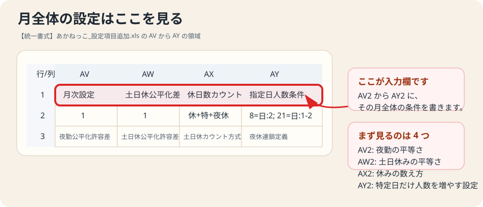
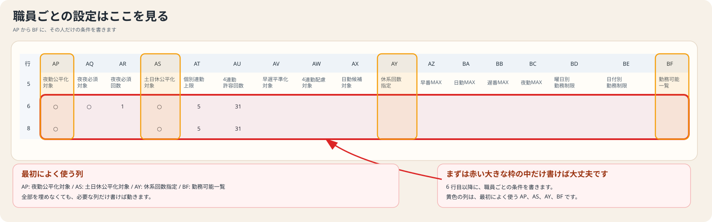

AV2 から AY2 は、その月全体に効く設定です。
やさしい説明書
【統一書式】あかねっこ_設定項目追加.xls の使い方
この説明書は、右端の設定欄に何を書けばよいかを、できるだけ専門用語を使わずにまとめたものです。最初は全部覚えなくて大丈夫です。必要なところだけ使えば動きます。
迷ったら空欄で大丈夫最初に覚えること
AP から BF は、その人だけに効く設定です。
書かなければ、もともとの設定をそのまま使います。
まずは AP、AS、AY、BF だけでも十分使えます。
実際の画面イメージ
実ファイルの設定欄を、そのまま読める形にした表です。どのセルに何が入っているかを workbook と見比べながら確認できます。
月全体の設定の場所

赤枠が、月全体の設定を実際に入力する行です。AV2 から AY2 を見れば、その月の共通条件を確認できます。
| 行/列 | AV | AW | AX | AY |
|---|---|---|---|---|
| 1 | 月次設定 | 土日休公平化差 | 休日数カウント | 指定日人数条件 |
| 2 | 1 | 1 | 休+特+夜休 | 8=日:2; 21=日:1-2 |
| 3 | 夜勤公平化許容差 | 土日休公平化許容差 | 土日休カウント方式 | 夜休連鎖定義 |
2 行目が実際に入力する値です。今のファイルでは AY2 に 8=日:2; 21=日:1-2 が入っています。
個人ごとの設定の場所

赤枠が、職員ごとの条件を書く場所です。黄色の列は、最初によく使う AP、AS、AY、BF を示しています。
| 行/列 | AP | AQ | AR | AS | AT | AU | AV | AW | AX | AY | AZ | BA | BB | BC | BD | BE | BF |
|---|---|---|---|---|---|---|---|---|---|---|---|---|---|---|---|---|---|
| 5 | 夜勤公平化対象 | 夜夜必須対象 | 夜夜必須回数 | 土日休公平化対象 | 個別連勤上限 | 4連勤許容回数 | 早遅平準化対象 | 4連勤配慮対象 | 日勤候補対象 | 休系回数指定 | 早番MAX | 日勤MAX | 遅番MAX | 夜勤MAX | 曜日別勤務制限 | 日付別勤務制限 | 勤務可能一覧 |
| 6 | ○ | ○ | 1 | ○ | 5 | 31 | |||||||||||
| 7 | |||||||||||||||||
| 8 | ○ | ○ | 5 | 31 |
5 行目が項目名です。6 行目以降に職員ごとの条件を書きます。○ が入っている項目だけ対象になります。
まずはここだけ使えば十分
- AP 夜勤公平化対象
- AS 土日休公平化対象
- AY 休系回数指定
- BF 勤務可能一覧
最初の運用では、この 4 つだけ触るのがおすすめです。細かい制限は、必要になってから追加で入れれば十分です。
月全体の設定
| セル | 項目 | 何を書くか | おすすめ |
|---|---|---|---|
| AV2 | 夜勤公平化許容差 | 整数 | 1 |
| AW2 | 土日休公平化許容差 | 整数 | 1 |
| AX2 | 土日休カウント方式 | 休のみ / 休+夜休 / 休+特+夜休 | 休+特+夜休 |
| AY2 | 日別人数指定 | 例: 8=日:2; 21=日:1-2 | 空欄 |
AV2 夜勤公平化許容差
夜勤回数の差をどこまで許すかです。1 なら、対象者どうしの差を 1 回までに近づけます。
1
AW2 土日休公平化許容差
土日休み回数の差をどこまで許すかです。こちらも、迷ったら 1 のままで大丈夫です。
1
AX2 土日休カウント方式
土日休みとして何を数えるかを決めます。迷ったら次を入れてください。
休+特+夜休
AY2 日別人数指定
イベント日などで、その日だけ日勤を増やしたいときに使います。
8=日:2; 21=日:1-2
意味は「8日は日勤を 2 人」「21日は日勤を 1 から 2 人」です。
個人ごとの設定
職員の行の右端に書きます。空欄なら、その人の設定は変わりません。
○ を入れる項目
| 列 | 項目 | 意味 |
|---|---|---|
| AP | 夜勤公平化対象 | この人を夜勤回数の平等化対象にする |
| AQ | 夜夜必須対象 | この人に「夜夜」を入れる対象にする |
| AS | 土日休公平化対象 | この人を土日休み平等化の対象にする |
| AV | 早遅平準化対象 | ユニット内で早番・遅番の偏りを抑える |
| AW | 4連勤配慮対象 | 4連勤をなるべく少なくしたい対象 |
| AX | 日勤候補対象 | 通常の日勤を入れられる人として扱う |
入力は ○ で有効、空欄または × で無効です。
○
数字を入れる項目
| 列 | 項目 | 意味 |
|---|---|---|
| AR | 夜夜必須回数 | 「夜夜」を最低何回入れたいか |
| AT | 個別連勤上限 | その人だけ連勤上限を変える |
| AU | 4連勤許容回数 | 4連勤を何回まで許すか |
| AY | 休系回数指定 | 休・特・夜休の合計回数 |
| AZ | 早番MAX | 早番の上限回数 |
| BA | 日勤MAX | 日勤の上限回数 |
| BB | 遅番MAX | 遅番の上限回数 |
| BC | 夜勤MAX | 夜勤の上限回数 |
数字は整数だけです。空欄なら変更しません。
5
勤務の種類をしぼる設定
BF 勤務可能一覧
その人がその月に入ってよい勤務を並べます。
早/遅/日/休
この例なら、夜勤には入りません。
使える記号の例は、早、遅、日、夜、夜休、休、特、空欄、3.0、5.5、6.0 です。夜 を入れた場合は、夜休は自動で扱われます。
曜日や日付でしばる設定
BD 曜日別勤務制限
曜日ごとに、その日に入ってよい勤務だけを書きます。
月=早/日/休; 火=早/日/休; 水=早/日/休; 木=早/日/休
この例なら、月火水木は早番・日勤・休みだけです。
BE 日付別勤務制限
特定の日だけ条件を付けたいときに使います。
5=休; 17=休; 21=早/日
この例なら、5日と17日は休みだけ、21日は早番か日勤だけです。
指定勤務日について
右端の設定欄とは別に、日ごとの勤務マスへ直接 早 や 休 を入れた場合は、その内容が指定勤務として優先されます。
- 研修の日はその日のマスに 日 を入れる
- 委員会の日はその日のマスに 早 を入れる
- 必ず休みにしたい日はその日のマスに 休 を入れる
委員会日は、今の運用では「その日を早番の指定勤務にする」と考えてください。
よくある例
夜勤に入れたくない
早/遅/日/休
この人だけ休みを 10 回にしたい
10
土日休みの回数を平等にしたい
対象者の AS に ○ を入れて、AW2 は 1 にします。
○
1
8日は日勤を 2 人にしたい
8=日:2
5日だけ休みにしたい
5=休
迷ったときの順番
- まず空欄のまま使う
- BF の勤務可能一覧だけ入れる
- 必要な人だけ AP や AS に ○ を入れる
- それでも足りなければ AY や MAX 列を入れる
- 最後に BD や BE の細かい制限を使う
最初から全部埋める必要はありません。少しずつ増やす方が安全です。